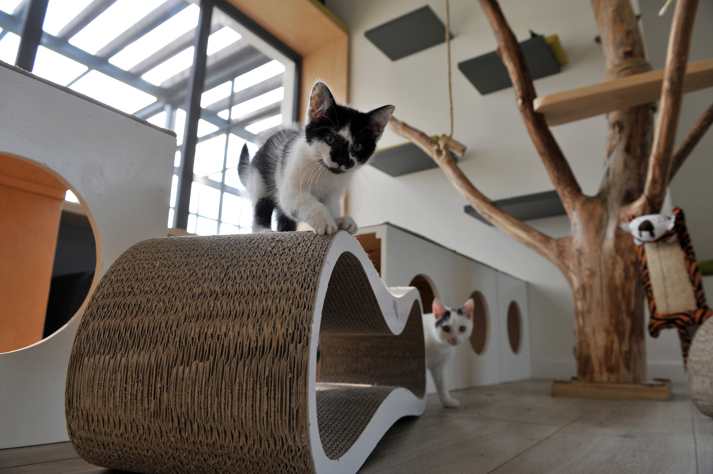

Quienes somos?
Somos un grupo de personas que amamos a los animales, sobre todo a los gatos. De manera voluntaria, nos ocupamos de rescatar, darles un seguimiento para su recuperación y encontrarles un hogar permanente. Nos aseguramos de cumplir con sus necesidades medicas y alimenticias para que puedan crecer de la mejor manera posible. Tenemos un sistema de "puertas abiertas", donde cualquiera que lo desee puede presentarse como voluntario o dar un hogar de acogida temporal. Brindamos charlas de concientizacion sobre el maltrato y el abandono animal, en escuelas, sociedades de fomento y centros culturales, para que la gente sepa lo que sufre un animal en estas situaciones. Es muy importante para nosotros poder generar un cambio, por eso queremos presentar un proyecto legislativo que procure mejorar la situación de los animales y sus derechos.
Fin de la organización
Tenemos como objetivo conseguir que cada animal que rescatamos pueda encontrar un hogar donde lo amen y lo integren como uno más de la familia. Para poder cumplirlo, a cada gato adoptado le damos un seguimiento por un lapso de tiempo determinado, para comprobar el bienestar del animal.
Locaciones
- barracas
- boedo
- congreso
- avellaneda
- lanus